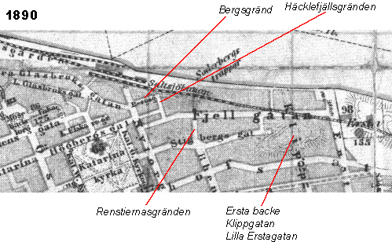
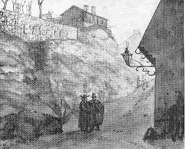
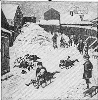

|
Den som skulle till östra Södermalm tog, före
Katarinavägens tillkomst, den branta och trånga
Stora Glasbruksgatan från Slussområdet upp emot
Katarinatrakten. Väl uppe på berget, just där stadens försörjningsinrättning låg ("Dihlströms", öpp-
nad 1844), kom man in på Nytorgsgatan (tidigare
Stadsträdgårdsgatan). Från Nytorgsgatan kunde
man sedan ta endera nuvarande Mäster Mikaels
gata-Fjällgatan eller Tjärhovsgatan österut. Båda
var något av genomfartsleder medan den smala och
backiga Stigbergsgatan endast begagnades av dem
som bodde där eller hade ärende dit. Nytorgsgatan hade alltså den funktion som Renstiernasgatan har i dag, den var genomfartsgata och i viss mån gräns. Västerut hade man Katarinaberget, österut Stigberget.
Om man ska skildra Stigberget är det naturligt att också ta med den del som nu avskurits genom den nersprängda Renstiernasgatan och att låta Nytorgsgatan bilda gräns västerut. På denna del av Stigberget slutade Högbergsgatan i en liten gränd som gick ut på bergskanten, Häckelfjällsgränden. Från denna kunde man sedan ytterst på berget ta sig fram en kort parallellgata till Högbergsgatan mot arbetsinrättningen, Bergsgränd. Gränderna försvann då Katarinavägen tillkom, förbindelsen mellan dem redan omkring 1880 i sam- band med sprängningar för Stadsgårdens utvidgning. Stigberget kallas också Stadsgårdsberget. Innan Stadsgårdshamnen sprängdes in och fick sin nuvarande omfattning stupade berget något mindre brant ner mot vattnet. I skrevorna fanns det möjlighet att anlägga trappor och förbindelseleder och flera av husen vid Fjällgatan tillhörde större anläggningar som hade fabriker, bryggor, vedskjul, bodar och magasin nere vid Stadsgården.
 |
  Några av de trappor som ledde upp över berget var allmänna leder. Upp mot Stigberget ledde Söderbergs trappor (mitt för Renstiernasgränden), längre österut kom Sista styverns trappor. Intill Söderbergs trappor uppfördes Stadsgårdshissen 1907. Det lilla hus vid Fjällgatan som nu är servering sommartid var från början ett våghus, byggt 1872 och ritat av den kände arkitekten Axel Kumlien. Det ägdes av spannmålsgrossisten C. H. Matton som hade sina magasin i hamnen nedanför. Från våghuset gick en "rullväg", ett transportband, ner till magasinen. Det var säkert mycket praktiskt eftersom man inte fick eller kunde köra med häst och vagn på den smala träbron nere vid hamnen.
|